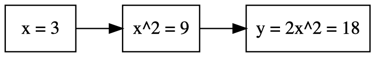
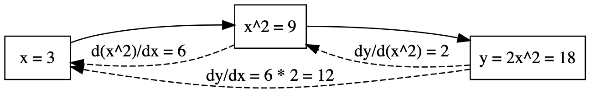
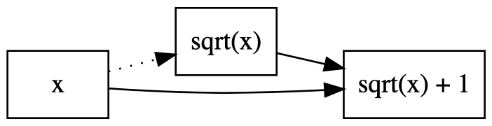
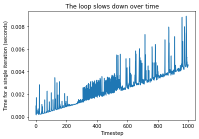
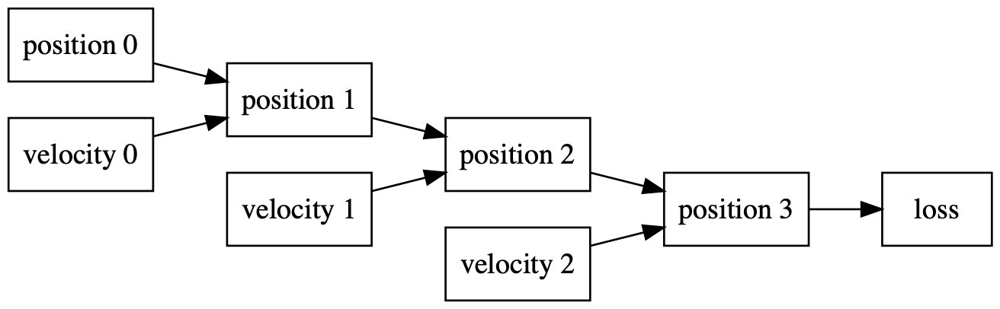

Clogs and Leaks: Why My Tensors Won't Flow
Defining a class of tricky bugs in PyTorch programs
Monday, November 23, 2020 · 5 min read
Note: Jekyll and Hyde — is how this blog goes. There are weeks of rational thought and weeks of irrational ramblings. This fall has been much of the latter, for good reason, but here is a break(!) in the clouds.
Okay, okay. The truth is that I wrote this essay for my CS class this quarter (leave it to Pat to assign an essay for a CS class!). But then, I think I have reached the age where every written assignment in college is to be treated as an opportunity to say something I otherwise would not have a chance to say… and so the essay, lightly edited, finds its way to this blog.
In this essay I want to describe two kinds of tricky bugs that might creep into your PyTorch programs. I call the bugs “clogs” and “leaks.” In my mind “clogs” and “leaks” reveal an exciting possible research direction for anyone interested in designing better APIs for automatic differentiation in machine learning.
Note: The examples presented, though in principle timeless, were tested using Python 3.8.5 running PyTorch 1.6.0.
Preliminaries: PyTorch’s Pipes
If you are familiar with PyTorch internals, you can skip this section. If not,
a brief review of a wonderful topic: how does PyTorch differentiate your code
for gradient descent? The technical term for PyTorch’s approach is tape-based
reverse-mode automatic differentiation. As you perform arithmetic computations
on your variables, PyTorch tracks the intermediate values in a computation
graph. When you want to differentiate a value, you call .backward() on that
value. PyTorch then walks backwards along this computation graph, computing
the derivative at each step and accumulating them according to the chain rule.
Eventually, the leaf nodes of the graph contain the derivatives you asked for.
Let me give a small example. Suppose we wanted to compute $d2x^2/dx|_{x=3}$. We might write a program that looks like this:
x = torch.tensor(3., requires_grad=True)
y = 2 * x**2
y.backward()
print(x.grad)
This program generates the following computation graph.

When you call .backward(), the PyTorch automatic differentiation walks
backwards along the graph, computing derivatives at each step. By the chain
rule, the product of these gives the overall derivative we sought.

Clogs
Now, consider this simple PyTorch program to compute $d(\sqrt{x} + x)/dx|_{x=4}$. What do you expect to be printed?
x = torch.tensor(4., requires_grad=True)
y = sqrt(x) + x
y.backward()
print(x.grad)
A casual user or AP calculus student would expect to see 1.25 printed, of course. But what actually gets printed is 1. Why?
Ah! I didn’t show you the full program: I hid the imports. It turns out that
the first line of this program is from math import sqrt, not from torch
import sqrt. Now, the Python standard library’s math.sqrt is not a
PyTorch-differentiable function, and so PyTorch is unable to track the flow of
derivatives through sqrt(x).
As a result of this bug, backpropagation gets “stuck” on the way back, and only
the derivative of x, i.e. 1, is deposited. This is a clog — the gradients
can’t flow! In the computation graph below, the dotted arrow represents the
clog.

The reason calling math.sqrt() on a PyTorch tensor is not a runtime error is
that PyTorch tensors implicitly convert to “raw” floating-point numbers as
needed. Most of the time this is a useful and indispensable feature. But I
believe this situation should at the very least raise an error or a warning.
While the example I presented was reasonably straightforward, there are many
different ways to “clog” backpropagation, with varying degrees of insidiousness
(for example, what happens when you mutate a variable in place?). It can be a
nightmare to debug such situations when something goes wrong — that is, if you
notice the bug in the first place!
By the way: the celebrated “reparametrization trick” that powers variational autoencoders is really just a workaround for a gradient clog problem. To train a variational autoencoder, you need to compute the derivative of a sample of a probability distribution with respect to the distribution’s parameters (e.g. the mean $\mu$ and variance $\sigma^2$ of a Gaussian distribution). Unfortunately, naïvely sampling from a parametrized distribution abruptly truncates the computation graph with respect to the parameters, because the random number generator is not differentiable all the way through — who knows what it’s doing! The solution, is to sample from a standard unit normal distribution (where $\mu=0$ and $\sigma=1$, and then re-scale the sample by multiplying by $\sigma$ and adding $\mu$. Of course, multiplication and addition are easily differentiable, and so the gradients can now flow. Problem solved!
Leaks
Now, consider this slightly more complicated PyTorch program. We are going to implement a silly reinforcement learning algorithm. Here is the situation: There is a truck driving on the road with constant velocity, and your goal is to catch up to it and drive right alongside the truck. At each timestep you are allowed to choose your velocity, and then you’re told how far you are from the truck.
The setup:
truck_velocity = torch.tensor(3.142)
truck_position = torch.tensor(2.718)
def get_measurement(car_position):
global truck_position
truck_position = truck_position + truck_velocity
return torch.abs(truck_position - car_position)
And a simple online gradient-based learning algorithm:
my_velocity = torch.tensor(0.01)
my_position = torch.tensor(0.)
for i in range(500):
my_velocity.requires_grad_()
my_position = my_position + my_velocity
loss = get_measurement(my_position)
loss.backward()
my_velocity =\
my_velocity.detach() - my_velocity.grad * 0.01
Unlike last time, there’s nothing up my sleeve here — this is all reasonable PyTorch code. This code actually works just fine.
But, if you run it for long enough (say, 1000 iterations), you’ll notice something odd: each step starts taking longer and longer. The algorithm is accidentally quadratic! You can see this behavior quite clearly in this graph, which shows a linear growth in iteration time from step to step (the spikes are garbage collection pauses).

How can this be? Isn’t each loop doing the same calculation?
Here is one hypothesis: if you’ve read this
paper you might look to see if we’re
.detach()-ing my_velocity. The .detach() function snips off all incoming
edges to a node in the computation graph; essentially, creating an artificial
clog. If we forget to do that, the gradients would “leak” back in time across
multiple steps in the graph, all the way back to the first step, and each
iteration would therefore take longer and longer — just as we’re observing.
But, alas, this is not the source of the bug: as you can see, we are
detaching my_velocity when we update it. So, what’s really going on here?
It’s tricky! The leak is in my_position, which subtly depends on all
previous values of my_velocity and therefore makes backpropagation compute
gradients for all previous timesteps. The dataflow diagram below hopefully
clarifies this point. Notice how each velocity has its parent nodes detached
(thanks to the call to .detach()!), but loss still has an indirect
dependence on the chain of positions.

Finding the correct place to insert the line my_position =
my_position.detach() is left as a not-quite-trivial exercise to the reader.
Beware! Putting it in the wrong place will either have no effect or cause
my_velocity to always have gradient 0.
Just like memory leaks, gradient leaks can be extremely sneaky. They pop up whenever your inference is “stateful” — think of applications like physics controllers, reinforcement learning, animated graphics, RNNs, and so on. I would not be surprised if many popular implementations of such algorithms do have “gradient leak” bugs. However, the bugs usually only manifest themselves visibly when the inference passes through enough timesteps for the leak to compound. Just like a dripping tap, you might not notice your losses until you get the bill at the end of the month… and then, you need to figure out how to track down the source of the leak and figure out the right way to fix it.
Plungers and patches? An appeal for PLumbing…
In the long term, how can we protect ourselves from this class of bugs? One potential solution is to embed the API inside a language whose type system tracks the creation of the computation graph. You might be able to use well-understood techniques like taint analysis or linear types (pun not intended) which traditionally track the flow of information, to now track the flow of differentiability through the program.
Let me be slightly more concrete about this suggestion. In our “clog” example,
a good type system might detect that sqrt cuts off the computation graph,
and, knowing that $y$ does not directly depend on $x$ in the expected way
anymore, complain at compile-time when we try to request $dy/dx$. In our
“leak” example, a good type system might notice that the “old” my_position
effectively goes out of scope when it is re-assigned, and therefore it might
complain that an unreachable reference to it actually does persist through the
new my_position. Such checks seem very reasonable to demand from a modern
type system.